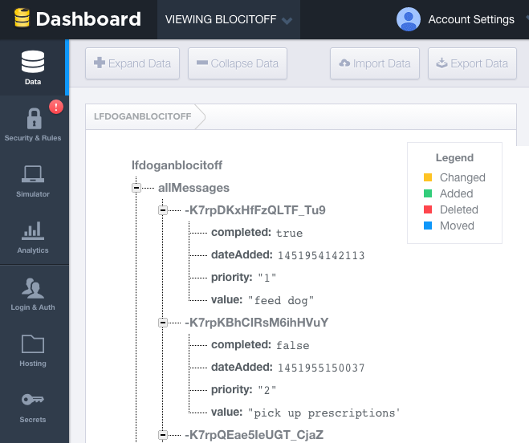
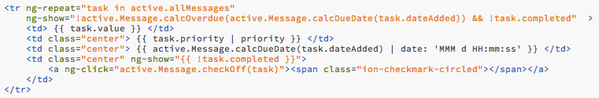
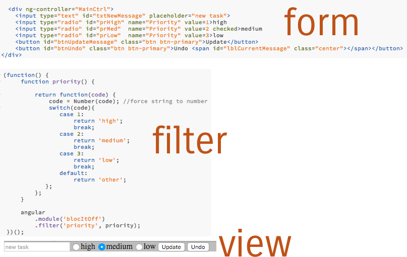

Bloc It Off
Summary
Writing a list of tasks that need to be completed is a great way to get organized. Unfortunately, sometimes our to-do lists end of being "would be nice to-do" lists that are very long. A way to keep the list short is to give them an expiration date.
Explanation
I was provided with wireframes to use as a guide for development. My task in this project was to use JavaScript, AngularJS, and the Firebase API to develop this application.
Wireframes provided
*
*
*
{kind=link}
{kind=link}
{kind=link}
Problem
The user stories I was given provide the individual steps to accomplish this project.
- Sync tasks with a persistent back-end.
- View active tasks in a list for default view.
- Automatically hide tasks older than 7 days from the active tasks view.
- View expired and completed tasks in a separate view.
- Provide a way for users to submit new tasks with description and priority.
- User needs a way to mark active tasks as complete.
Solution
The easiest and most secure way for me to save tasks in a database without back-end development was to use the Firebase API. I organized my data so that each task entered by the user will have values for entry date, task description, priority, and completion status.
In order to start my development using AngularJS I cloned Bloc's Frontend Project Starter for a single page application using UI Router.
When a user wants to mark off a task as complete he should only need to click on the task. It shouldn't be complicated or involve multiple steps. I used AngularJS's ngShow to only show tasks where the value of 'completed' is false.
On each table view I added a paragraph listing all tasks that are in the database. The reason I added this was so that the user would be able to quickly glance over the task history on the default page. If all tasks are completed or expired the user would otherwise see nothing.
Results
When submitting a new task, I altered the wireframe so that users could select a priority instead of adding text for that field. I determined that this would format the data better so that I could assign a number to each value. When displaying the data in a table it would be easier to sort them by a number than text. Alphabetically the text would be listed high, low, then medium and I wanted them to be listed high, medium, then low.
Conclusion
The MVP was successful. This app works well when using the app on a desktop. Future iterations for this project would include making it responsive and mobile-friendly. In its current state, the text is very small and doesn't maximum the width of a mobile device's screen. An additional improvement is to set log-in information for multiple users.